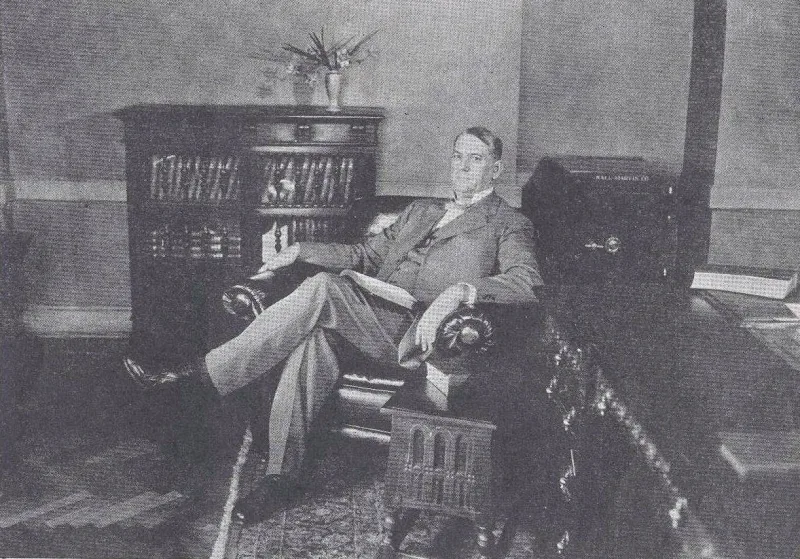

Heaven closed in 1935 and reopened in 2007
AdmittedThe Watchtower's own publications admit these facts. You can make this point from their library alone.
The date that closed heaven
From the Rutherford era until 2007, the teaching was that the heavenly calling closed in 1935. After that year, new converts belonged to the earthly class.
Whole generations were told their hope had been settled by a date they had no part in.
The quiet reversal
Then Questions From Readers in The Watchtower of May 1, 2007 (pp. 30-31) said something new.
"We cannot set a specific date for when the calling of Christians to the heavenly hope ends." No scriptural argument had changed. There had never been one.
The date rested on a Rutherford convention talk in Washington D.C.
You can see it in their statistics
Memorial partakers are those who profess the heavenly calling. The count fell for decades, down to 8,524 in 2005.
That fits a closed class dying out. After the 2007 change it reversed and nearly tripled, reaching 23,212 by 2024.
Their answer, at full strength
This is progressive understanding. The 1935 idea was a sincere inference, drawn from identifying the great crowd that year, and Jehovah clarified it in his own time.
No core doctrine changed: two hopes remain, and the 144,000 is still a literal number. As for the rising count, their literature says it may include some with mistaken impressions or emotional difficulties.
So there is no arithmetic problem.
How strong is this argument?
They admit this themselves, and the numbers are their own. But look at the dilemma they have created.
Either thousands of new partakers really are anointed, and the whole 1935 structure was wrong. Or the organization now prints a headline statistic it privately disbelieves.
What to say
"For 72 years the heavenly call was closed in 1935. What verse changed in 2007?"


How they answer this — at its strongest
The light grew clearer, and no core teaching changed: still two hopes, still 144,000.
The Witness response is that the light grew clearer. The 1935 idea was a sincere inference. It came from naming the great crowd that year, and Jehovah made the matter plain in his own time.
No core teaching changed. There are still two hopes, and the 144,000 is still a literal number. Their books also explain the rising partaker count. Some who partake may be mistaken, or may be facing emotional strain. The Watchtower has said the number 'does not necessarily' show the true count of the anointed. So there is no problem with the sum.
The verdict
They admit it themselves. They now print a number they tell members to doubt.
Both the 72-year teaching and its ending sit in their own books. The partaker counts are their own yearly figures.
The official caveat gives the game away. The organization now prints a number it does not trust.
Graded admitted. Severity is medium. This case is about whether the teaching holds together, and about who gets to claim authority. It is not about direct harm.
Sources
- Questions From Readers, The Watchtower May 1, 2007 (jw.org)
- jwfacts — Watchtower quotes regarding 1935 and the great crowd
- jwfacts — Memorial partaker statistics and trend